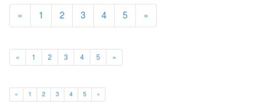
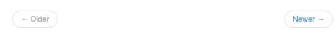

Bootstrap 分页
本章将讲解 Bootstrap 支持的分页特性。分页（Pagination），是一种无序列表，Bootstrap 像处理其他界面元素一样处理分页。
分页（Pagination）
下表列出了 Bootstrap 提供的处理分页的 class。
| Class | 描述 | 示例代码 |
|---|---|---|
| .pagination | 添加该 class 来在页面上显示分页。 | <ul class="pagination"> <li><a href="#">«</a></li> <li><a href="#">1</a></li> ....... </ul> |
| .disabled, .active | 您可以自定义链接，通过使用 .disabled 来定义不可点击的链接，通过使用 .active 来指示当前的页面。 | <ul class="pagination"> <li class="disabled"><a href="#">«</a></li> <li class="active"><a href="#">1<span class="sr-only">(current)</span></a></li> ....... </ul> |
| .pagination-lg, .pagination-sm | 使用这些 class 来获取不同大小的项。 | <ul class="pagination pagination-lg">...</ul> <ul class="pagination">...</ul> <ul class="pagination pagination-sm">...</ul> |
默认的分页
下面的实例演示了上表中所讨论的 class .pagination 的用法：
<!DOCTYPE html> <html> <head> <title>Bootstrap 实例 - 默认的分页</title> <link href="/bootstrap/css/bootstrap.min.css" rel="stylesheet"> <script src="/scripts/jquery.min.js"></script> <script src="/bootstrap/js/bootstrap.min.js"></script> </head> <body> <ul class="pagination"> <li><a href="#">«</a></li> <li><a href="#">1</a></li> <li><a href="#">2</a></li> <li><a href="#">3</a></li> <li><a href="#">4</a></li> <li><a href="#">5</a></li> <li><a href="#">»</a></li> </ul> </body> </html>
结果如下所示：
分页的状态
下面的实例演示了上表中所讨论的 class .disabled、.active 的用法：
<!DOCTYPE html> <html> <head> <title>Bootstrap 实例 - 分页的状态</title> <link href="/bootstrap/css/bootstrap.min.css" rel="stylesheet"> <script src="/scripts/jquery.min.js"></script> <script src="/bootstrap/js/bootstrap.min.js"></script> </head> <body> <ul class="pagination"> <li><a href="#">«</a></li> <li class="active"><a href="#">1</a></li> <li class="disabled"><a href="#">2</a></li> <li><a href="#">3</a></li> <li><a href="#">4</a></li> <li><a href="#">5</a></li> <li><a href="#">»</a></li> </ul> </body> </html>
结果如下所示：
分页的大小
下面的实例演示了上表中所讨论的 class .pagination-* 的用法：
<!DOCTYPE html> <html> <head> <title>Bootstrap 实例 - 分页的大小</title> <link href="/bootstrap/css/bootstrap.min.css" rel="stylesheet"> <script src="/scripts/jquery.min.js"></script> <script src="/bootstrap/js/bootstrap.min.js"></script> </head> <body> <ul class="pagination pagination-lg"> <li><a href="#">«</a></li> <li><a href="#">1</a></li> <li><a href="#">2</a></li> <li><a href="#">3</a></li> <li><a href="#">4</a></li> <li><a href="#">5</a></li> <li><a href="#">»</a></li> </ul><br> <ul class="pagination"> <li><a href="#">«</a></li> <li><a href="#">1</a></li> <li><a href="#">2</a></li> <li><a href="#">3</a></li> <li><a href="#">4</a></li> <li><a href="#">5</a></li> <li><a href="#">»</a></li> </ul><br> <ul class="pagination pagination-sm"> <li><a href="#">«</a></li> <li><a href="#">1</a></li> <li><a href="#">2</a></li> <li><a href="#">3</a></li> <li><a href="#">4</a></li> <li><a href="#">5</a></li> <li><a href="#">»</a></li> </ul> </body> </html>
结果如下所示：

翻页（Pager）
如果您想要创建一个简单的分页链接为用户提供导航，可通过翻页来实现。与分页链接一样，翻页也是无序列表。默认情况下，链接是居中显示。下表列出了 Bootstrap 处理翻页的 class。
| Class | 描述 | 示例代码 |
|---|---|---|
| .pager | 添加该 class 来获得翻页链接。 | <ul class="pager"> <li><a href="#">Previous</a></li> <li><a href="#">Next</a></li> </ul> |
| .previous, .next | 使用 class .previous 把链接向左对齐，使用 .next 把链接向右对齐。 | <ul class="pager"> <li class="previous"><a href="#">← Older</a></li> <li class="next"><a href="#">Newer →</a></li> </ul> |
| .disabled | 添加该 class 来获得一个颜色变淡的外观。 | <ul class="pager"> <li class="previous disabled"><a href="#">← Older</a></li> <li class="next"><a href="#">Newer →</a></li> </ul> |
默认的翻页
下面的实例演示了上表中所讨论的 class .pager 的用法：
<!DOCTYPE html> <html> <head> <title>Bootstrap 实例 - 默认的翻页</title> <link href="/bootstrap/css/bootstrap.min.css" rel="stylesheet"> <script src="/scripts/jquery.min.js"></script> <script src="/bootstrap/js/bootstrap.min.js"></script> </head> <body> <ul class="pager"> <li><a href="#">Previous</a></li> <li><a href="#">Next</a></li> </ul> </body> </html>
结果如下所示：
对齐的链接
下面的实例演示了上表中所讨论的 class .previous、.next 的用法：
<!DOCTYPE html> <html> <head> <title>Bootstrap 实例 - 翻页中对齐的链接</title> <link href="/bootstrap/css/bootstrap.min.css" rel="stylesheet"> <script src="/scripts/jquery.min.js"></script> <script src="/bootstrap/js/bootstrap.min.js"></script> </head> <body> <ul class="pager"> <li class="previous"><a href="#">← Older</a></li> <li class="next"><a href="#">Newer →</a></li> </ul> </body> </html>
结果如下所示：

翻页的状态
下面的实例演示了上表中所讨论的 class .disabled 的用法：
<!DOCTYPE html> <html> <head> <title>Bootstrap 实例 - 翻页的状态</title> <link href="/bootstrap/css/bootstrap.min.css" rel="stylesheet"> <script src="/scripts/jquery.min.js"></script> <script src="/bootstrap/js/bootstrap.min.js"></script> </head> <body> <ul class="pager"> <li class="previous disabled"><a href="#">← Older</a></li> <li class="next"><a href="#">Newer →</a></li> </ul> </body> </html>
结果如下所示：
